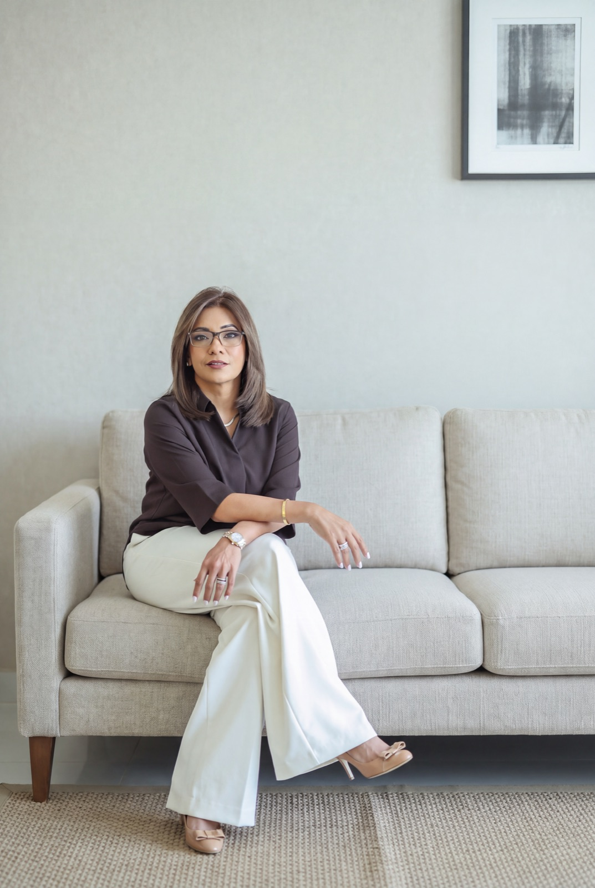
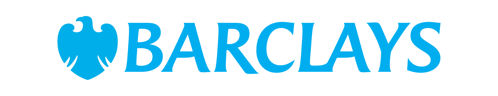
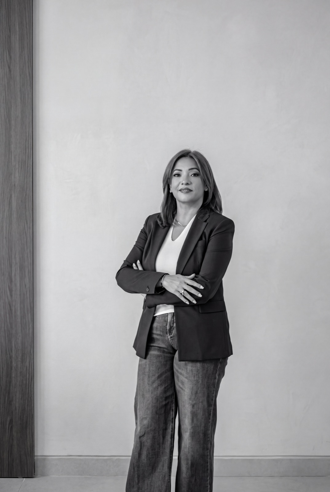
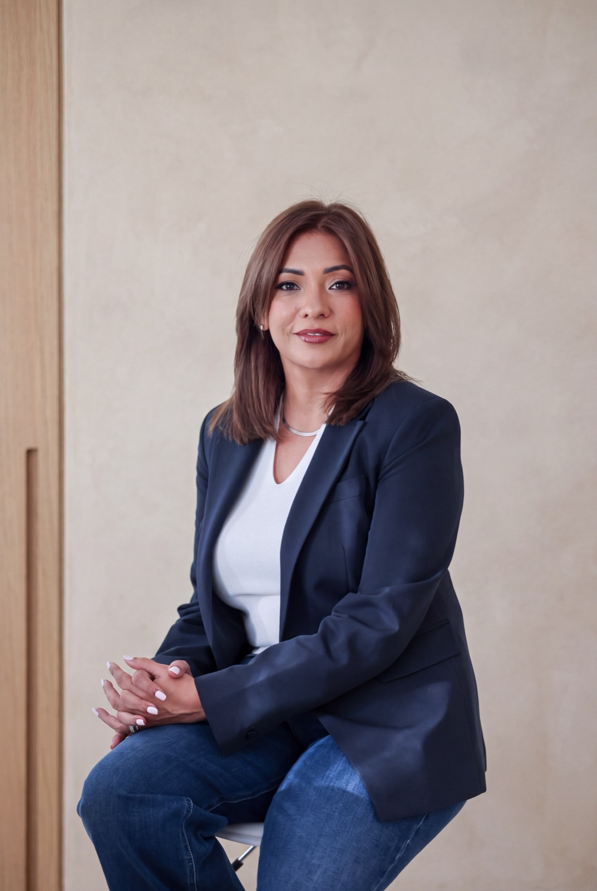
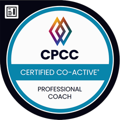

Start here
Discovery call
A complimentary 45-minute conversation about where you are now, and whether we are the right fit.

Megha Bhalla, CPCC · Executive & transformational coaching
By changing the internal lens through which a person experiences life.
A complimentary
45-minute conversation.
Experience
A career spanning banking and entrepreneurship, building people functions and leading organisations through growth, consolidation, mergers and the disruptions of recent years.
A career built across

How we work together
A 45-minute discovery call to explore where you are and whether we are the right fit.
Six structured sessions, from self-awareness to aligned action.
Awareness is where it starts, not where it ends.
Fit

In her words
“The leaders who navigate change well are rarely the ones with all the answers. They are the ones willing to be honest about not having them yet.”Megha Bhalla, CPCC
Services
Start with a conversation. If it is right, the work follows.
Start here
A complimentary 45-minute conversation about where you are now, and whether we are the right fit.
The core work
Six private sessions that move you from self-awareness to aligned action. We look at where your energy goes, the values behind your decisions and the patterns shaping how you lead, then turn insight into real change.
For senior leaders
A confidential, six-month engagement for CEOs and senior executives navigating change, built around the decisions in front of you.
For teams
Coaching for leadership teams on what they find hardest: honest feedback, leadership visibility and the art of delegation.
Client experiences
I still remember my first session. She said something we hear, but that day, it set an intention that I’ve carried with me ever since: “We are all here to become the best versions of ourselves.” Every session since has been a deeper experience of understanding who I am underneath everything I’m trying to achieve. I genuinely didn’t know I needed a mentor until I started working with her.

Hi, I’m Megha
About
Fourteen years in global banking. Then Chief People Officer and founding team at Traveazy Group, from an idea to more than 350 people, through a pandemic and two mergers.
What stayed with me were the conversations after the meetings ended. The leader who had stopped sleeping. The founder whose instincts built the company but would not scale it.
So I do not give advice. I ask the question you have been circling, then stay quiet long enough for you to answer it. You are already creative, resourceful and whole. Coaching clears the space for what is already there.

Outside the room
Blessed with two daughters, 21 and 16. Dog lover. Ardent traveller, 45 countries and counting. And a yoga and meditation practice that began long before the coaching did.
Writing
Reflections from 25 years in the room, and from the coaching chair.
Swipe for more →
People often come wanting to change something external. Almost every time, we end up at the lens through which they are looking at the goal, not the goal itself.
Read and LearnThe leaders who navigated enormous change were not the ones with the best communication skills. They were the ones who heard what was not being said.
Read and LearnEvery leader has an internal cast of characters that shows up under pressure. Most have been running on their fuel so long they have mistaken them for strengths.
Read and LearnThe hardest part is rarely the new role itself. It is the in-between: after one identity has ended and before the next has fully arrived.
Read and LearnReinvention rarely arrives as a clear call. It arrives as a quiet friction, a sense that the life you have built no longer fits the person you have become.
Read and LearnGratitude is often reduced to a journaling habit. Used well, it is a second lens, one that lets a person register what is working without losing the instinct that built their success in the first place.
Read and LearnReady when you are
Forty-five minutes, online, complimentary. Bring the thing you have not said out loud yet.

FAQ
No, though the two can sit comfortably alongside each other. Therapy often looks back, to understand and heal. Coaching looks forward: we work with where you are now and who you're becoming next, in your leadership and in your life.
Sessions run 60 minutes. Within the six-session journey, we ideally meet every two weeks, which gives you room to actually live the work between conversations.
Both. Most sessions happen online, which suits clients across time zones and cities. One-to-one coaching can also be in person or hybrid, and team coaching is in person.
If you're asking the question, you're probably closer than you think. Readiness tends to look like a quiet sense that something needs to shift, alongside a willingness to sit with that honestly. A discovery call is a low-pressure way to find out.
Yes. Most of the work happens online, so location is not a constraint. Clients join from wherever they are.
Advice hands you a conclusion. Coaching creates the conditions for you to reach your own, which is the one you will actually act on.
Completely. Nothing said in a session leaves it, and no client is named publicly without their permission.
“Coaching is unlocking a person’s potential to maximize their own performance. It is helping them to learn rather than teaching them.” Sir John Whitmore, Coaching for Performance